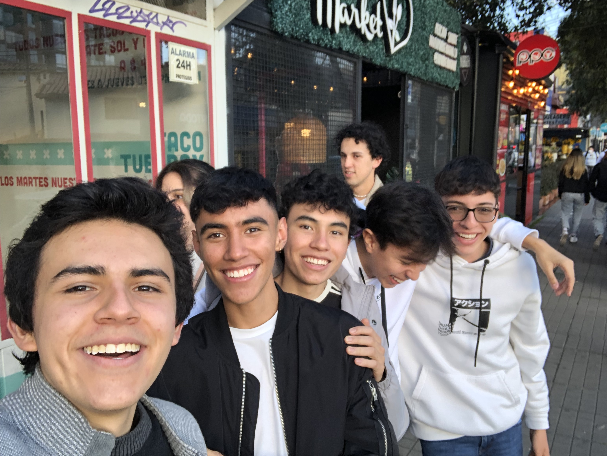
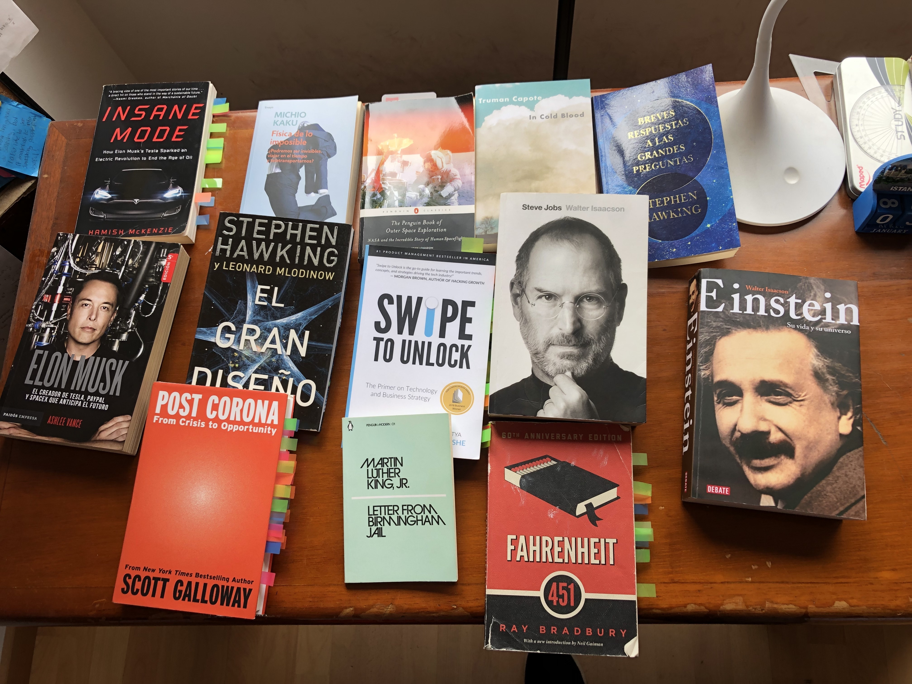

I love solving Rubik's Cubes. While I'm no Max Park or Zemdegs (who hold world records below 4 seconds), I can solve the cube in
less than 90 seconds. I only know the Beginner's Method, but I will probably learn CFOP in the future.
I love watching movies! A pretty common hobbie, yes, but I just really, really enjoy relaxing watching action or dramedy (drama + comedy) films,
my two favorite genres. My favorite movie is Silver Linings Playbook, a dramedy that is so effing good that Jennifer Lawrence
won an Oscar for her performance in it.

Who doesn't love hanging out with friends? Love my bros.
I love recording videos for my math YouTube channel! Not only do I practice my English speaking skills, but I also
reinforce my mathematical knowledge.

I also love reading books! I used to ONLY enjoy non-fiction books about real-world issues and themes, but after I read
the famous GAN (Great American Novel) To Kill A Mockingbird by Harper Lee, I felt in love with novels. After that,
I read the Hunger Games trilogy, In Cold Blood (I loved it!), and other shorter novels like Fahrenheit 451.